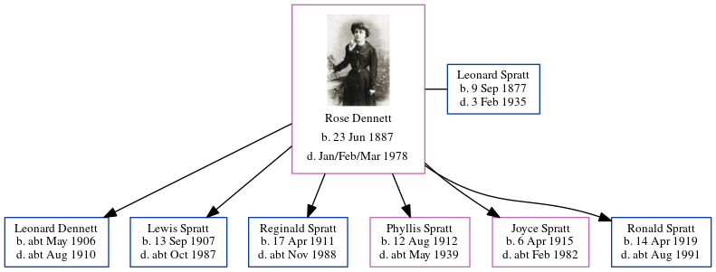

Rose Ethel Muskett Spratt (née Dennett) 1887 - 1978
[ Home ] | [ Calendar ] | [ Surnames Index ] | [ Errors ] | [ Family History ]Rose Dennett, the wife of Leonard Spratt (the great-uncle of Nigel Horne), was born in Kilburn, London, England on 23 Jun 18871,2,3,4 and married Leonard (an agricultural labourer with whom she had 6 children: Leonard Muskett S, Lewis George, Reginald John, Phyllis Rose, Joyce Catherine and Ronald Ernest) in Thanet, Kent, England around Aug 19065.
During her life, she was living St Lawrence in Thanet in 18911; at 1 Lydden Farm Cottages, Garlinge, Kent on 31 Mar 19017; and at 11 Grotto Road, Cliftonville, Kent on 2 Apr 19116.
She died in Jan/Feb/Mar 1978 in Thanet4.
Children
- Leonard Muskett S was born c. May 1906
- Lewis George was born on 13 Sept 1907
- Reginald John was born on 17 Apr 1911
- Phyllis Rose was born on 12 Aug 1912
- Joyce Catherine was born on 6 Apr 1915
- Ronald Ernest was born on 14 Apr 1919
Citations
- 1891 England Census Online publication - Provo, UT, USA: The Generations Network, Inc., 2005.Original data - Census Returns of England and Wales, 1891. Kew, Surrey, England: The National Archives of the UK (TNA): Public Record Office (PRO), 1891. Data imaged from The National
- 1901 England Census Online publication - Provo, UT, USA: The Generations Network, Inc., 2005.Original data - Census Returns of England and Wales, 1901. Kew, Surrey, England: The National Archives of the UK (TNA): Public Record Office (PRO), 1901. Data imaged from the National
- 1911 England Census Online publication - Provo, UT, USA: Ancestry.com Operations, Inc., 2011.Original data - Census Returns of England and Wales, 1911. Kew, Surrey, England: The National Archives of the UK (TNA), 1911. Data imaged from the National Archives, London, England.
- England & Wales, Death Index: 1984-2005 Online publication - Provo, UT, USA: The Generations Network, Inc., 2007.Original data - General Register Office. England and Wales Civil Registration Indexes. London, England: General Register Office. © Crown copyright. Published by permission of the Cont
- England & Wales, FreeBMD Marriage Index: 1837-1915 Online publication - Provo, UT, USA: The Generations Network, Inc., 2006.Original data - General Register Office. England and Wales Civil Registration Indexes. London, England: General Register Office. © Crown copyright. Published by permission of the Cont
- 1911 Census for England & Wales - Findmypast (was age 23 and the wife of the head of the household)
- 1901 England, Wales & Scotland Census - Findmypast (was age 13 and the daughter of the head of the household)
Notes
Rumoured to be the illegitimate daughter of the son of a wealthy Norfolk family and a maid.
Media
Rose Dennett

Rose Dennett - 2
England & Wales marriages 1837-2008 - BMD/M/1906/3/AZ/000107/317
1901 England, Wales & Scotland Census - GBC/1901/0005521408
Family Tree
Map
Generated by ged2site. Last updated on Jul 3, 2024
Known Issues
No records of living with anyone
1939 UK register information missing